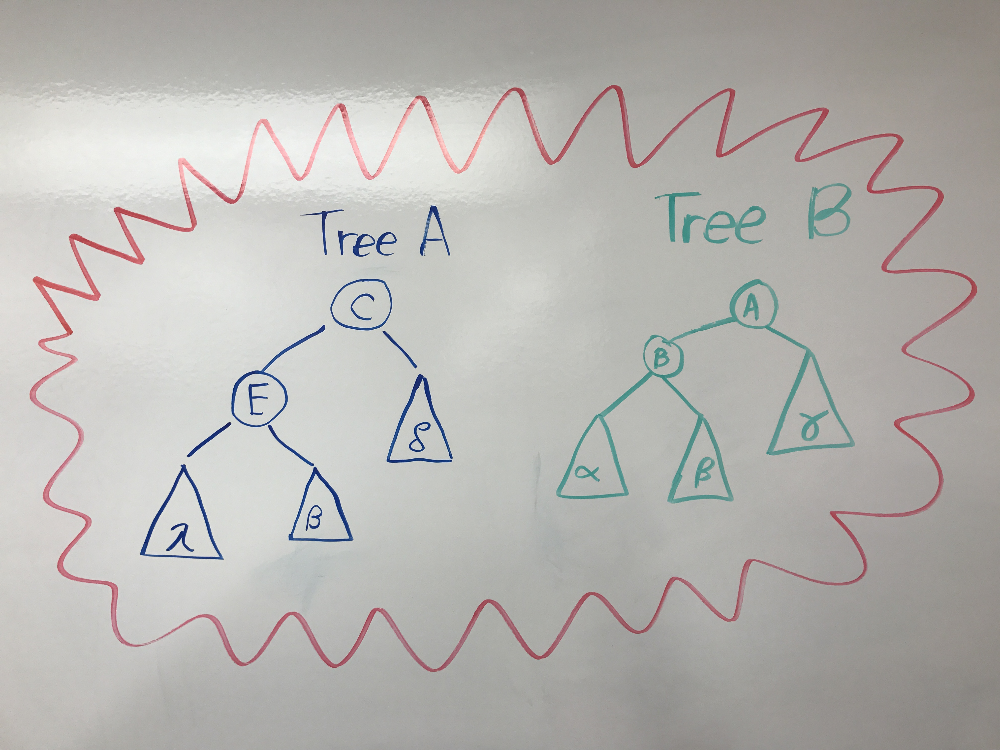

By: Abdisalan Mohamud
The binary search tree (BST) is perhaps one of the most fundamental data structures studied in computer science. The worst case single access time for a tree of size n is Omega (log n). But when we’re not accessing only once, we can do much better. There is a breadth of research done to improve the performance for a sequence of accesses and many different BSTs data structures are a result of that research. This project studies a method developed by Erik Demaine, John Iacono, Stefan Langerman, and Ozgur Ozkan in their publication to combine these different BSTs various performance improvements into a single BST.